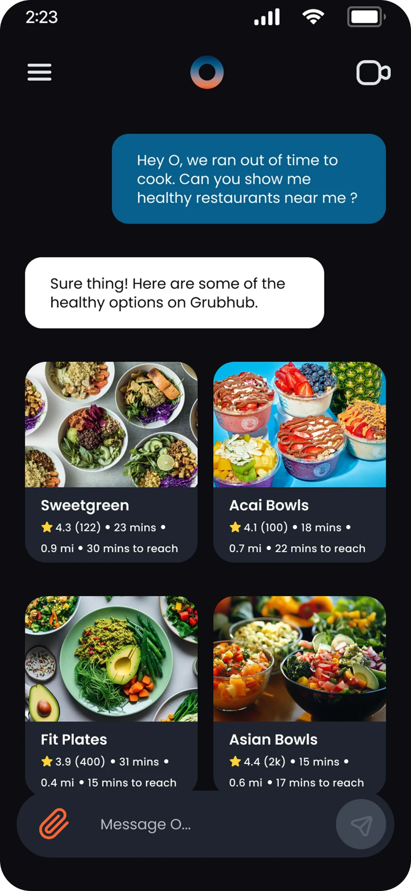
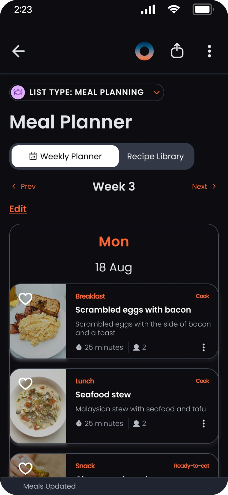
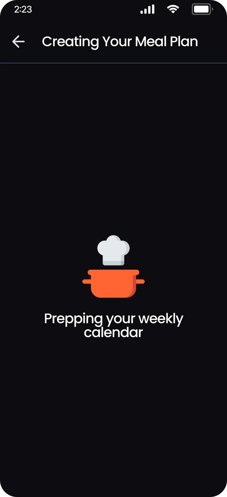
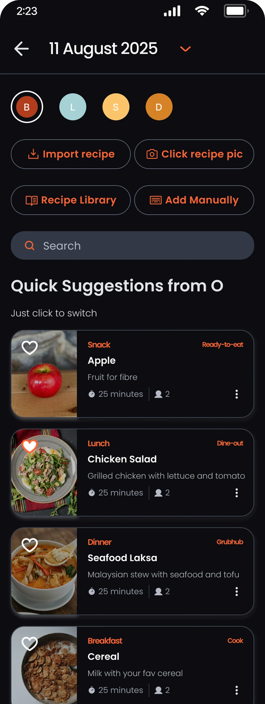
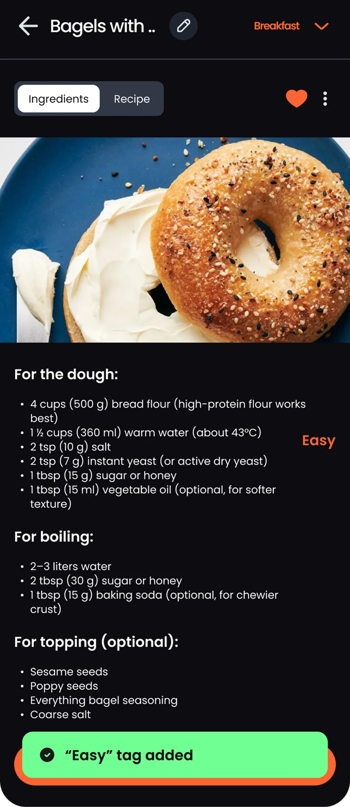
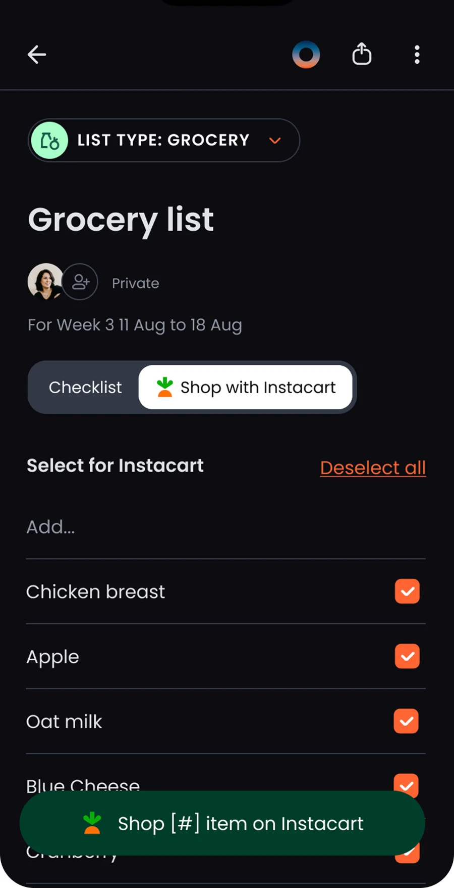

Designing an AI-first experience for family life
OHAI is an AI household assistant that turns scattered household information into coordinated plans. The experience brings messages, voice notes and everyday requests together, making it easier to manage meal planning, schedules and reminders in one shared place.
Making everyday coordination easier
Family life involves a constant flow of messages, appointments, reminders and daily decisions, often spread across multiple tools. Keeping everything organised creates a hidden workload, leaving families to manage the coordination rather than focus on what matters.
OHAI set out to bring household planning into one shared experience, reducing the effort required to keep everyday life running smoothly.


Turning scattered information into actionable plans
The AI-first experience transforms unstructured information into a coordinated household plan. Voice notes, messages and everyday requests could become tasks, calendar events, reminders and schedules, bringing information together in one shared place.
The experience was designed around how families naturally communicate and organise their lives, reducing manual input and the need to switch between tools.



From everyday requests to coordinated action
The resulting experience brought planning, scheduling, reminders and meal coordination into a single ecosystem, with an AI assistant helping users move from everyday requests to practical next steps. Meal planning extended into food delivery integrations, connecting decisions with action.
Alongside the product experience, the design-to-development handoff was streamlined, supporting a more consistent, scalable product foundation.
